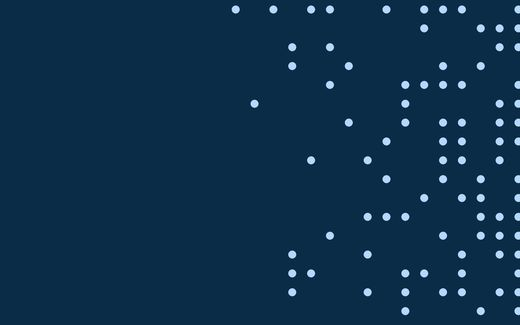
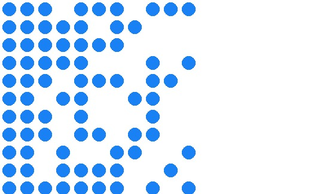
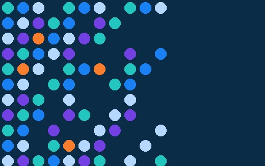
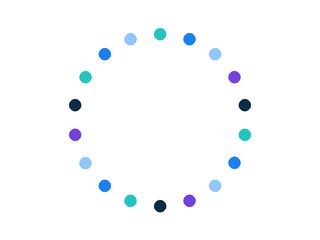
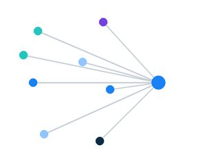
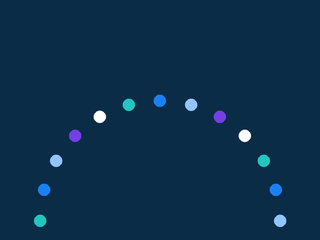
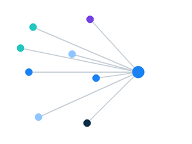

Dot patterns
The dots pattern
The dots are Rhapsody's primary graphic device, and they carry the meaning of what we do. Each dot is a data point, a system, a person. Rhapsody's work is to connect that data, clean it, and organize it, and the dots tell that story: many separate points brought into alignment, resolving from scattered noise into an ordered, legible field. Used well, they signal connectivity, precision, and scale while adding texture and refinement.
Pick a background, a color mode, and the composition. The main composition is the uniform scattered field; at small sizes the big dot (one oversized dot resolving into a few) carries the same story; and dots can also be composed into framing and diagram elements. All are covered below. Whatever you choose, the dots stay to a corner or edge, cover no more than 50 percent of the space, and never overlap text.
Backgrounds and dot colors
Every dot field works the same way: pick a background, a color mode, and a pattern. Backgrounds are white, Rhapsody blue, or navy. Dots are either single color (white, navy, Rhapsody blue, or light blue) or multicolor. Use any combination that stays legible.
The dot field
There is one field pattern for backgrounds: the uniform scattered field. (The older graduated field, where dot size changed across the grid, is retired; see below.)
Uniform scattered field. All dots are the same size on an aligned grid. Density depends only on distance from the anchoring edge: densest right at the edge and thinning steadily away from it, evenly along the whole length of that edge (for a side edge, the full height). It is a band that fades in one direction, not a corner blob or a triangle. Even at its densest, leave gaps, only about half to two thirds of the grid positions are filled, and individual dots drop out at random so the thinning looks organic. The field should breathe; when in doubt, remove dots. Equal size keeps it from reading as a wave. Single color or multicolor.

Single color, light blue on navy.

Single color, Rhapsody blue on white.

Multicolor on navy.
Use these ready-made fields rather than building new dot patterns by hand (hand-built fields drift off the grid and off-brand). Scattered-dot fields (light blue, Rhapsody blue, navy, and multicolor; transparent PNG, anchored to one edge, flip or rotate to anchor a different edge): Scattered Dots.
Anchor the field to a corner or edge and cover no more than 50 percent of the space. Density should read as airy, not packed: keep visible gaps everywhere, and let the field thin gradually as it moves away from its anchoring edge rather than stopping at a hard line. Never overlap text, keep a clear gap (at least the layout margin, about 6 to 7 percent). If multicolor, include one to five orange dots, few enough that orange reads as a surprise against the other colors. In the scattered field, every dot is the same size.
The big dot
At a large scale, a single dot becomes a hero graphic: one oversized brand-color circle bleeding off a corner or edge, with two to four smaller dots trailing from it. It reads as one data point resolving into many, and it carries the dot story where a full scattered field would be too busy or too small to resolve, display ads, social tiles, thin banners, and cover slides. It is the dot motif’s compact, high-impact form, and the preferred device for small and fast-read formats.
It carries a specific meaning. Where the scattered field shows scale and order, many equal points resolving from noise into an aligned whole, the big dot shows relationship and momentum. One dominant dot with smaller dots gathering and overlapping around it reads as data sources and organizations of every size coming into connection: a large health system, a lab, a clinic, an app, each a different scale, drawn into one connected network with Rhapsody as the anchor. The overlap is the point, separate systems no longer siloed but touching and exchanging. It is the warmer, more human counterpart to the precise grid, which is why it leads brand and hero moments, and it maps to the go-to-market story, one platform others build and connect around across both pillars (Build the infrastructure, Automate the work).
Teal big dot on Rhapsody Blue.
Rhapsody Blue big dot on navy.
Light blue big dot on white.
- One oversized dot, bleeding off a corner or edge so it’s never a complete circle floating in the frame.
- Two to four smaller companion dots gathering around it at varied sizes; they may overlap the big dot and one another, which reads as systems coming into contact. Drawn from the brand palette; multicolor may include a single orange dot, but the big dot itself is never orange.
- Solid brand color, no gradient fill (teal, Rhapsody blue, light blue, or navy). Color is left to design within the palette and color hierarchy; pick one that stays legible on the background.
- Copy sits on the calm side of the frame; keep the dots clear of text and the wordmark.
- One device per layout: the big dot or a scattered field, never both. See Display ads and Email template for it in use.
Framing and diagram elements
Beyond backgrounds, the dots can be composed into shapes, a ring, an arc, a network, or a corner cluster, that frame content or carry a simple idea. Use them as decorative and structural accents in creative work: digital display ads, white papers and reports, banners, and slides. Here the dots are always equal size, always multicolor but never orange, and carry no gradient fill. A faint connecting line is allowed for a diagram, never a squiggle. Coverage stays within 50 percent and clear of text.


✓ On-brand
Ring
✓ On-brand
Arc
✓ On-brand
Network
✓ On-brand
Corner cluster
At a glance: do and don't
- Uniform scattered field (equal-size dots) on white, blue, or navy.
- Single color or multicolor; multicolor includes one to five orange dots. Exempt from the three-color rule.
- Anchored to a corner or edge, no more than 50 percent, with a clear gap from text.
- The one dot device in the layout.
- Full-view takeover or more than 50 percent coverage.
- Random placement, mixed sizes, or dots over text, faces, or the logo.
- Off-palette, outlined, or gradient-filled dots.
- Low-contrast pairings, or a solid block that never dissolves.

✕ Off-brand
Full takeover

✕ Off-brand
Random, mixed sizes
✕ Off-brand
Solid block, no dissolve
Dot row accent
A short horizontal row of dots is an approved compact use of the dot motif, useful in banners and email headers where a full dot field would be too much.

- A few dots, one uniform size, evenly spaced.
- Sequence through brand colors, for example teal, blue, light blue, purple.
- Use as a small accent, not a full field. Do not combine with a dot field in the same layout.